macOS용 Metric
내장 메트로놈을 갖춘 macOS용 타이밍 및 주파수 툴킷입니다. 템포에서 딜레이 타임을 구하고, FM 비율과 사이드밴드를 계산하고, LFO를 비트에 맞추고, 샘플을 이조할 수 있습니다. 크기를 조절할 수 있는 창이라 DAW 옆에 열어 둘 수 있습니다. Siri, Shortcuts, 알림 센터 위젯을 지원합니다.
- 탭 템포 및 시각적 비트가 있는 메트로놈
- BPM → ms / Hz 변환기 (보통, 점, 셋잇단)
- 음 ↔ 주파수 테이블 (108개 음, A4 = 440 Hz)
- 이동 및 속도, FM 계산기, LFO 속도, 32개 배음
- 메뉴 막대 탭 템포, 딜레이 타임(ms, Hz), 메트로놈, 음 높이까지
- Siri, Shortcuts 및 알림 센터 BPM 위젯
스크린샷
웹사이트 디자인에 맞춘 라이트 모드 및 다크 모드 스크린샷 포함.

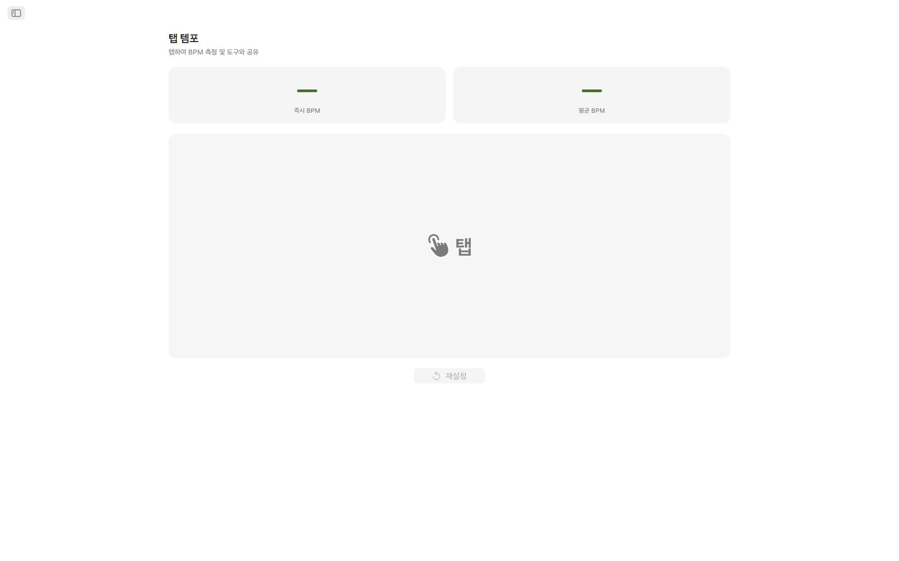
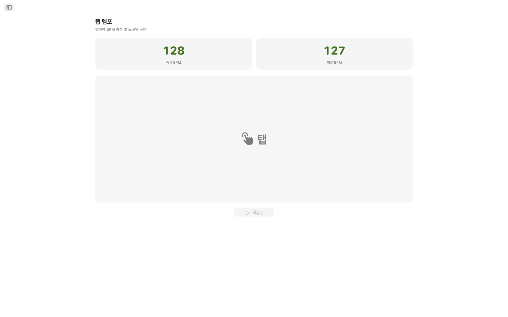
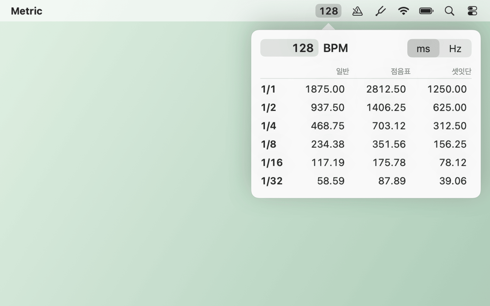
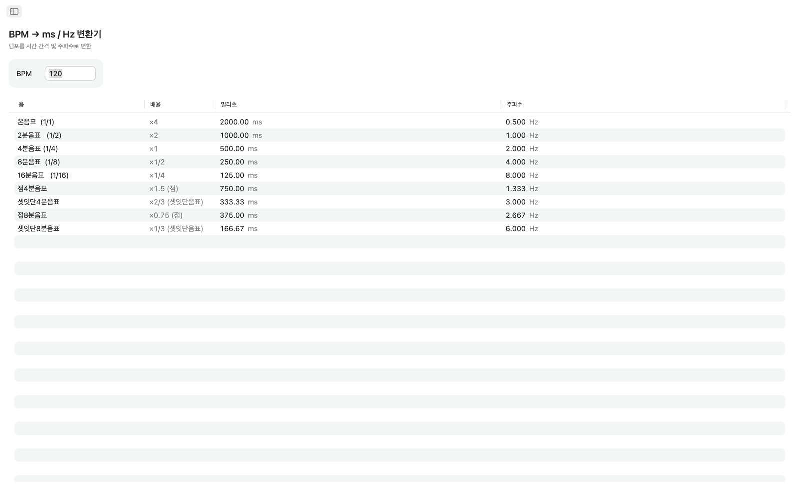
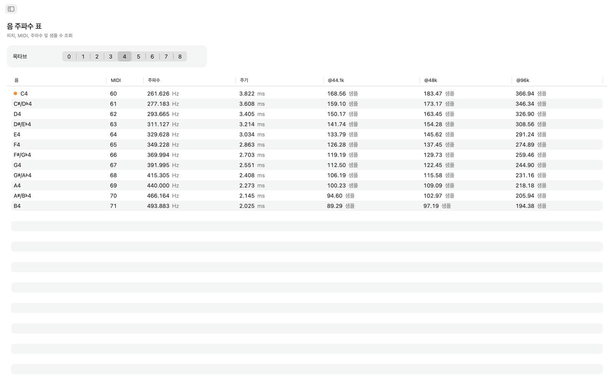
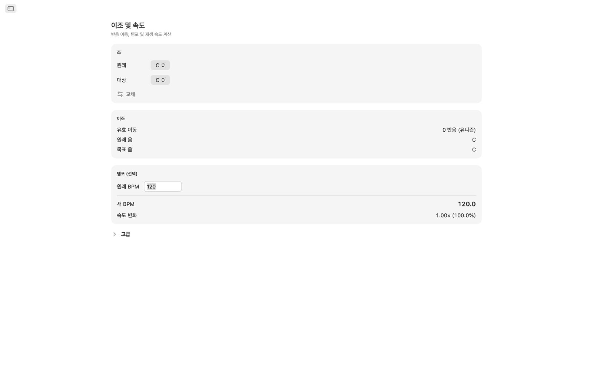
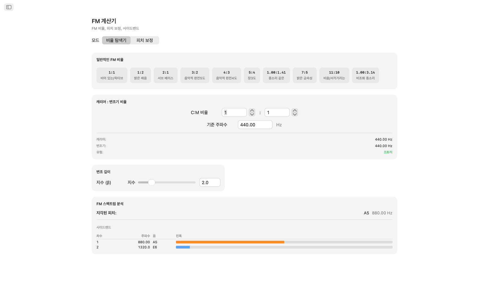
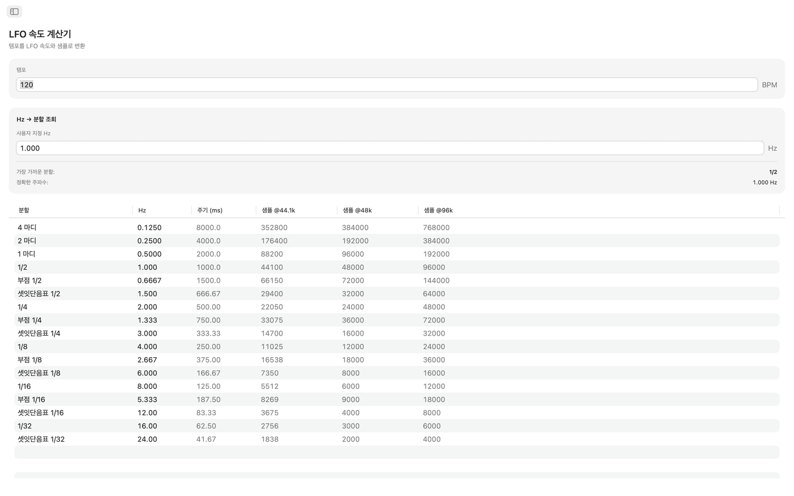
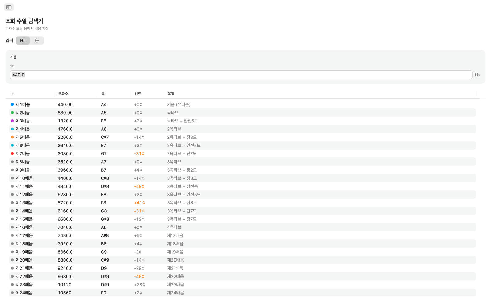
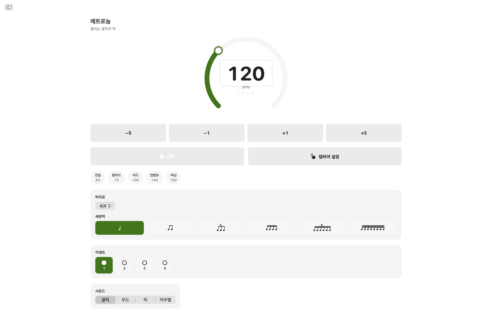
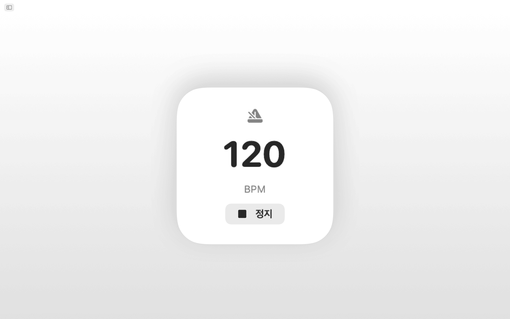
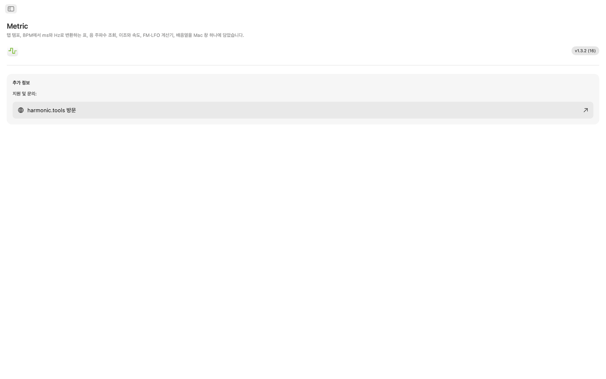
기능
- 메트로놈에는 템포 다이얼, 탭으로 설정하는 템포, 박자, 분할, 시각적 비트 표시기가 있습니다.
- 넓은 탭 영역을 클릭해 템포를 측정합니다. Metric은 마지막 탭의 BPM과 최대 8번 탭의 이동 평균을 보여 주며, 두 값 중 어느 쪽이든 한 번의 클릭으로 BPM 변환기, 이조, LFO 속도 도구에 넘길 수 있습니다.
- BPM → ms / Hz 변환기는 템포를 입력하면 온음표, 2분음표, 4분음표, 8분음표, 16분음표의 보통, 점, 셋잇단 값을 알려 줍니다. 각 행에 밀리초와 Hz가 표시되므로 계산기 없이 딜레이, 리버브 프리딜레이, 사이드체인 타이밍을 설정할 수 있습니다.
- 음 주파수 테이블에는 C0부터 B8까지 108개의 반음계 음이 있습니다. 각 음의 MIDI 번호, Hz 주파수, 밀리초 단위 주기, 44.1kHz, 48kHz, 96kHz에서의 샘플 수가 표시되고 가온다에는 표시가 붙습니다. A4 = 440 Hz 기준입니다.
- 이동 및 속도에서는 원래 키와 목표 키를 고르면 반음 이동, 음정 이름, DAW에 입력할 정확한 이조 값이 표시됩니다. 원래 BPM을 넣으면 Metric이 새 템포와 재생 속도 비율을 계산합니다. 센트 컨트롤(±100)과 2옥타브 범위의 속도 컨트롤(±24반음)로 세밀하게 조정할 수 있습니다.
- FM 계산기에는 두 가지 모드가 있습니다. 비율 탐색기는 기본 주파수를 기준으로 캐리어와 변조기 비율을 설정하며, 빈 옥타브(1:1)부터 비조화 벨(1:π)까지 10개의 FM 프리셋을 제공합니다. 피치 보정은 반대 방향으로 작동합니다. 목표 음을 고르면 정확한 캐리어와 변조기 주파수를 구해 줍니다. 두 모드 모두 최대 10개 부분음의 주파수, 가장 가까운 음, 색상으로 구분한 진폭을 담은 사이드밴드 테이블을 보여 주고, 이 값은 변조 지수 컨트롤에 따라 달라집니다.
- LFO 속도 계산기는 BPM을 4마디부터 1/32 셋잇단까지 17가지 음악적 분할의 LFO 속도로 변환합니다. 각 행에 Hz, 밀리초 단위 주기, 44.1kHz, 48kHz, 96kHz에서의 사이클당 샘플 수가 표시됩니다. 역방향 조회는 Hz 값을 입력하면 가장 가까운 음악적 분할을 찾고 편차를 함께 보여 줍니다.
- 조화 수열 탐색기는 주파수나 음에서 시작해 처음 32개 배음의 주파수, 가장 가까운 음 이름, 센트 편차, 음정 이름을 나열합니다. 낮은 차수의 배음은 색상으로 구분되고 30센트를 넘는 편차는 강조되어, 비조화 성분을 쉽게 찾을 수 있습니다.
공유되는 템포와 튜닝
템포를 한 번 탭하면 BPM 변환기, 이조, LFO 속도 도구가 같은 실시간 BPM을 사용합니다. 음 주파수, FM 계산기, 배음은 모두 A4 = 440 Hz 기준입니다.
Siri, Shortcuts 및 위젯
Siri에게 메트로놈 시작과 중지, BPM 설정, 템포 탭, BPM의 ms 변환, 음 주파수 찾기, 템포 이조를 요청할 수 있습니다. 모든 도구는 Shortcuts 동작이기도 하며, BPM 위젯은 알림 센터에 템포를 표시합니다.
메뉴 막대 도구
앱을 열지 않고 메뉴 막대에서 템포를 탭할 수 있습니다. 오른쪽 클릭하면 딜레이 타임을 ms 또는 Hz로 보여 주며, 원하는 템포를 직접 입력할 수도 있습니다. 메트로놈과 음 높이 항목, 메뉴 막대 전용 모드, 로그인 시 열기는 선택 사항입니다.
데스크톱에서
- 완전한 오프라인 작동. 계정, 광고, 추적 없음
- 사이드바 내비게이션의 네이티브 macOS 앱
- 시스템 테마를 따르는 다크 모드 호환 인터페이스
- 44.1kHz, 48kHz, 96kHz 기준 샘플 수 표시
- 크기 조절 가능한 창. DAW 옆에 열어두세요
손쉬운 사용
VoiceOver와 음성 제어를 지원하며, 화살표 키와 스페이스 바로 키보드로도 사용할 수 있습니다.
Metric은 7일간 무료로 써 볼 수 있습니다. 체험 기간이 끝나면 일회성 구매로 전체 기능을 사용할 수 있으며, 구독은 없습니다.